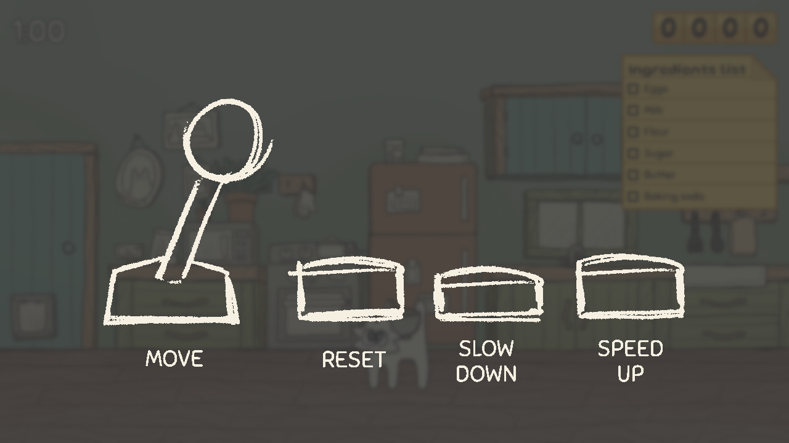
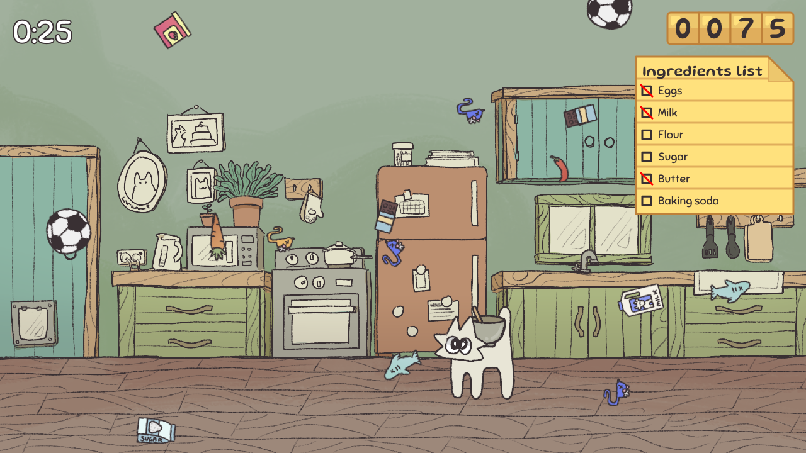
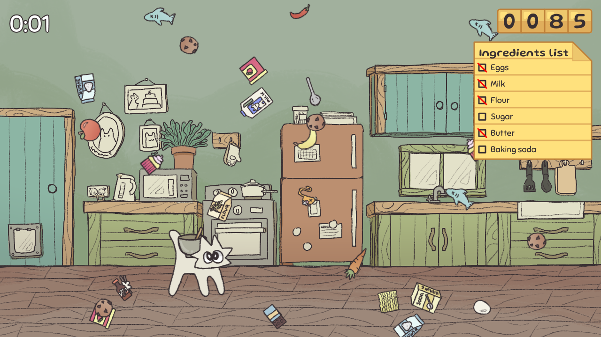
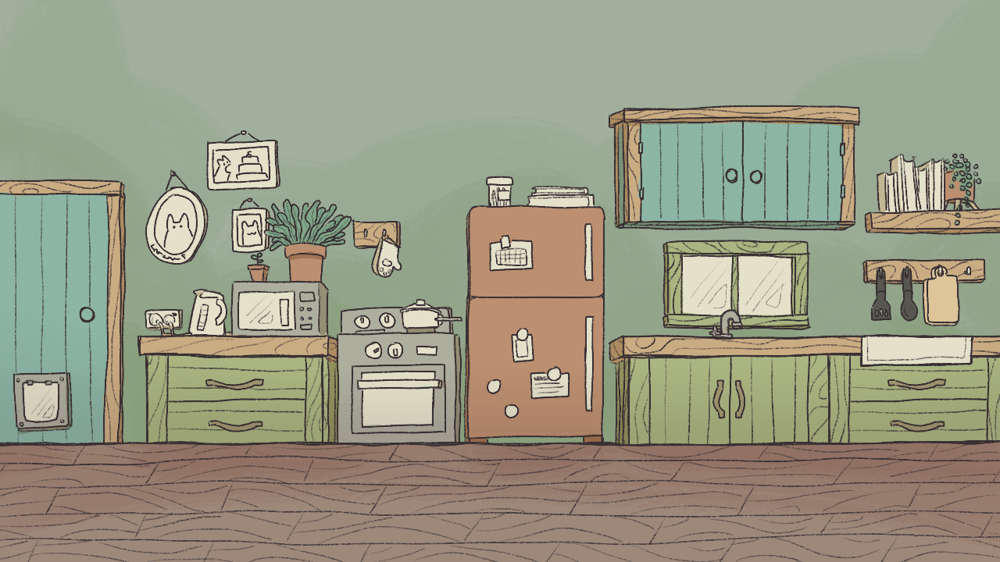
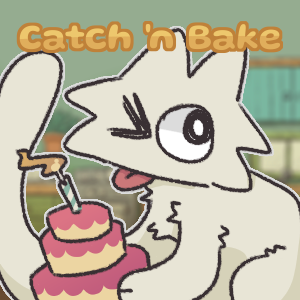

Role: Illustrator and programmer
Tools: p5.js, Krita, CSS
Try it out: Catch 'n Bake
Summary of Project
Catch ‘n Bake is a catcher minigame where you play a small cat who wants to bake a cake. The aim of the game is to earn as many points as you can. To earn points, catch the ingredients that make up a cake given by the list of ingredients while avoiding the bad items and objects that shouldn't go into a cake. Bonus points are given for completing the ingredients list.



Objective
My objective for this brief was to develop an interactive creative coding sketch for an exhibition in one of three public laneways in Fortitude Valley that would interest and engage visitors to the lane. The sketch would be exhibited on one of three Creative Coding Cabinets installed in the lanes.
My role
Try it out
Controls
The controls to play this minigame are as follows:
- Move the character (left and right arrow keys / left and right joystick)
- Reset the game (key number one (1) / first button)
- Slow down the character (key number two (2) / second button)
- Speed up the character (key number three (3) / third button)


This minigame was exhibited at QUT Creative Coding Exhibition on Bakery Lane and Winn Lane in Fortitude Valley!